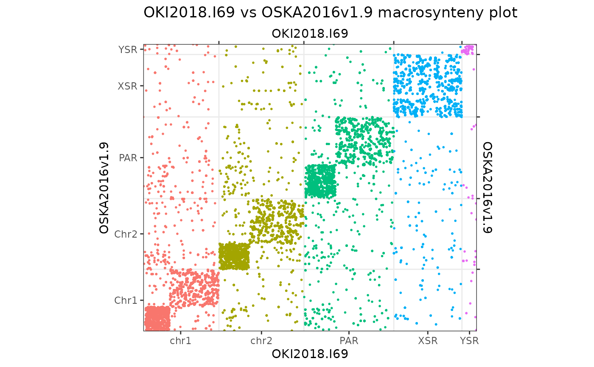
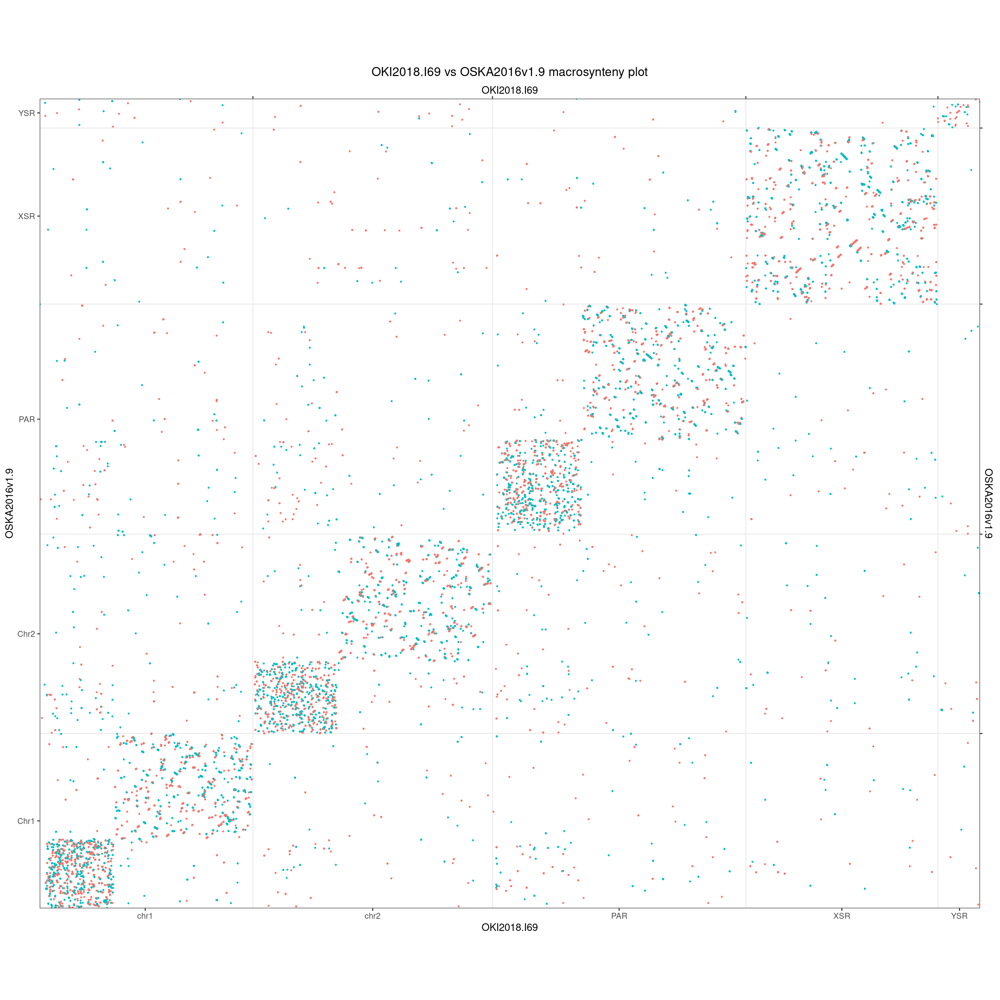
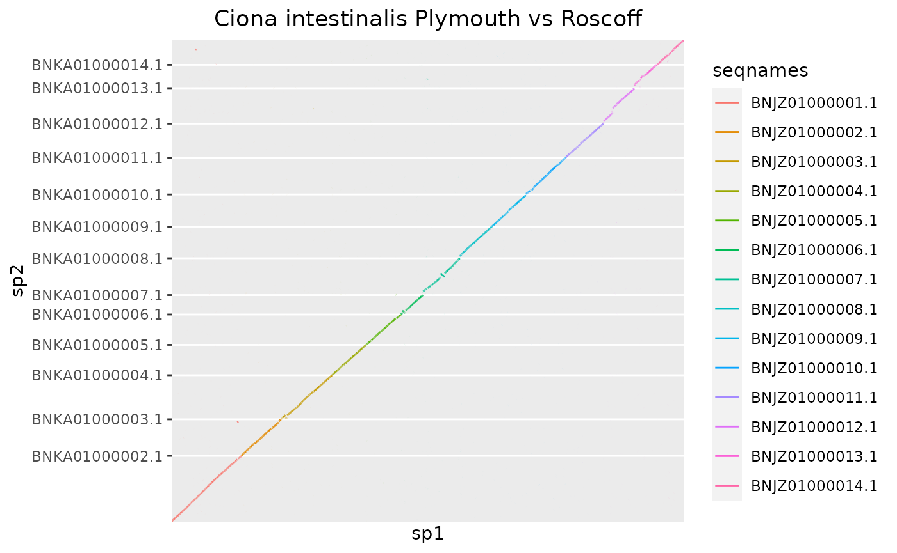
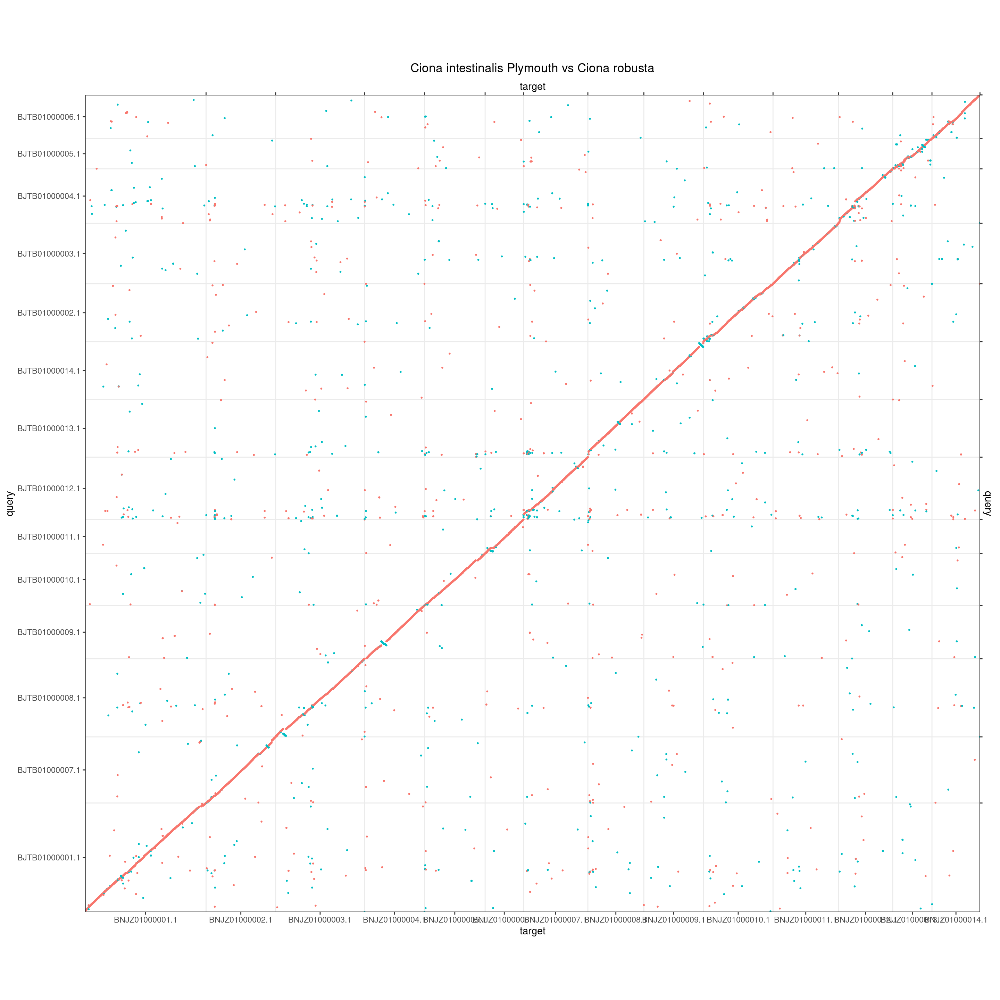
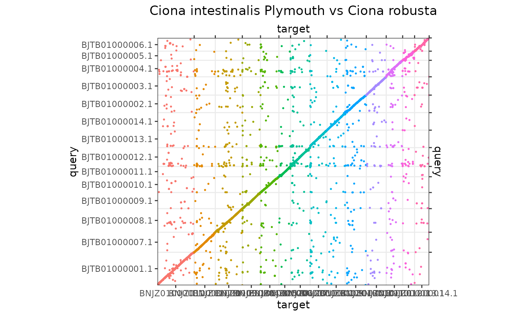
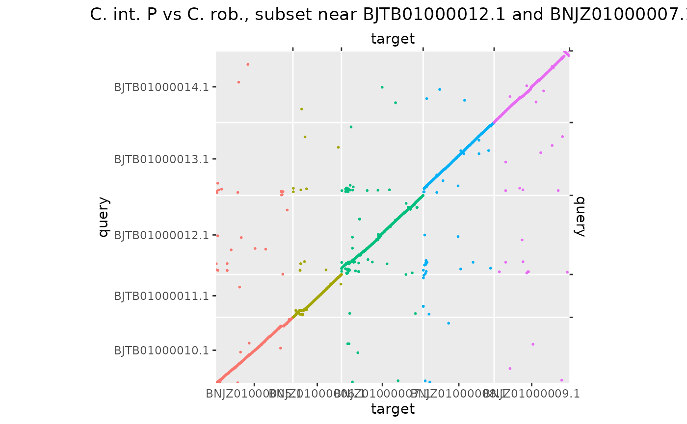
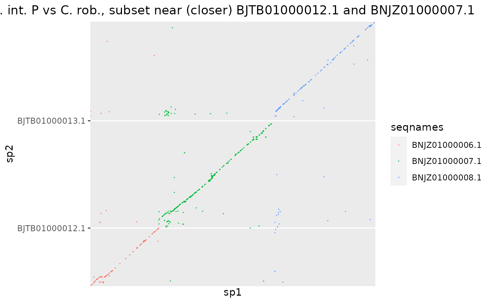
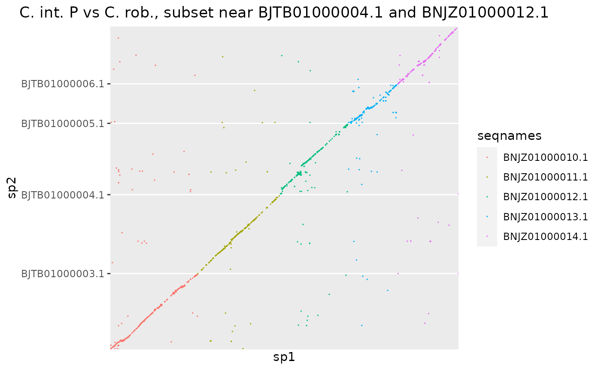
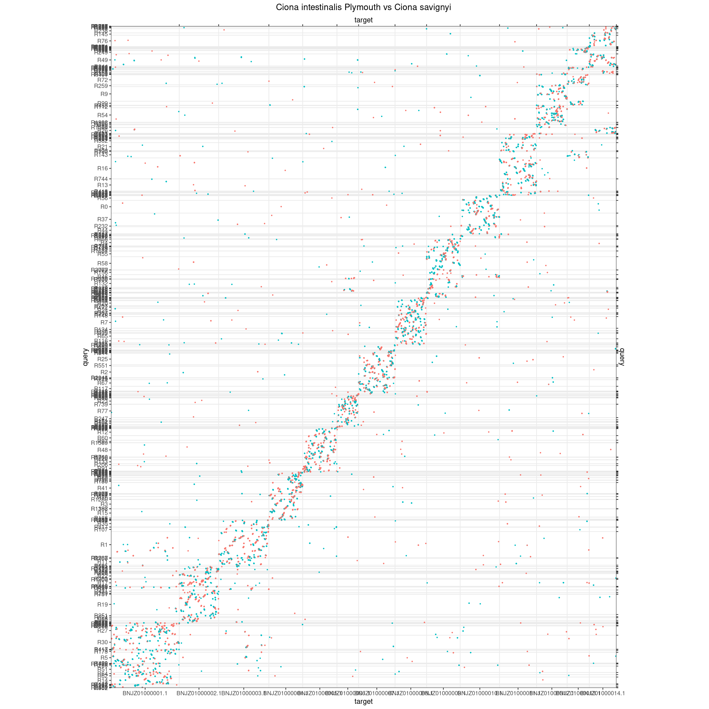
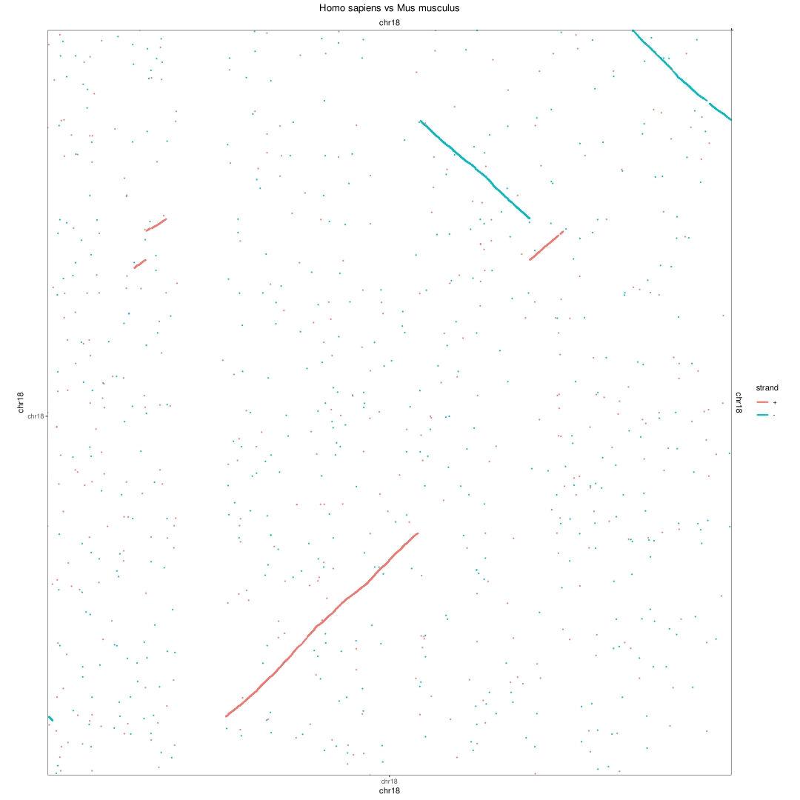

Alignment line plots, whole genomes
Charles Plessy
13 October, 2023
Source:vignettes/OxfordPlots.Rmd
OxfordPlots.Rmd
knitr::opts_knit$set(cache = TRUE)Introduction
This vignette produces alignment line plots of pairs of genomes to illustrate differences in the extent of scrambling in Oikopleura compared to equivalent pairs in other genera.
Figure 1 panel A was generated in this vignette.
Load R pacakges and data
library('OikScrambling') |> suppressPackageStartupMessages()
ggplot2::theme_set(theme_bw())
genomes <- OikScrambling:::loadAllGenomes()## Warning in runHook(".onLoad", env, package.lib, package): input string
## 'Génoscope' cannot be translated from 'ANSI_X3.4-1968' to UTF-8, but is valid
## UTF-8
## Warning in runHook(".onLoad", env, package.lib, package): input string
## 'Génoscope' cannot be translated from 'ANSI_X3.4-1968' to UTF-8, but is valid
## UTF-8
load("BreakPoints.Rdata")Oikopleura
Oki vs Osa
Line plot used for panel A of Figure 1. Is based on aligned regions
(before coalescing), stored in the gbs object. The manually
set colors are used throughout the manuscript to represent chromosomes 1
and 2, the PAR, the XSR and the YSR.
makeOxfordPlots(gbs$Oki_Osa, diag = FALSE) +
scale_color_manual(values = c("#E78AC3", "#A6D854", "#FFD92F", "#8DA0CB", "#66C2A5")) +
theme_bw() +
theme(legend.position="none")
Same, colored by strand.
makeOxfordPlots(gbs$Oki_Osa, diag = FALSE, col = "strand") + theme_bw() + theme(legend.position="none")
The other plots use default ggplot2 colors.
Osa vs Aom
makeOxfordPlots(gbs$Osa_Aom, diag = FALSE)Ciona
Ciona intestinalis (Plymouth vs Roscoff)
makeOxfordPlots(gbs$Ply_Ros) + ggtitle("Ciona intestinalis Plymouth vs Roscoff")
Ciona intestinalis (Plymouth) vs Ciona robusta
makeOxfordPlots(gbs$Ply_Rob) + ggtitle("Ciona intestinalis Plymouth vs Ciona robusta")
Troubleshoot of grid pattern
We see horizontal patterns what are they? I think they may be pericentromeric regions.
makeOxfordPlots(gbs$Ply_Rob) + ggtitle("Ciona intestinalis Plymouth vs Ciona robusta")
coa$Ply_Rob |>
plyranges::filter(seqnames(query) %in% c("BJTB01000010.1", "BJTB01000011.1", "BJTB01000012.1", "BJTB01000013.1", "BJTB01000014.1")) |>
plyranges::filter(seqnames %in% c("BNJZ01000005.1", "BNJZ01000006.1", "BNJZ01000007.1", "BNJZ01000008.1", "BNJZ01000009.1")) |>
makeOxfordPlots() + ggtitle("C. int. P vs C. rob., subset near BJTB01000012.1 and BNJZ01000007.1")
coa$Ply_Rob |>
plyranges::filter(seqnames(query) %in% c("BJTB01000011.1", "BJTB01000012.1", "BJTB01000013.1")) |>
plyranges::filter(seqnames %in% c("BNJZ01000006.1", "BNJZ01000007.1", "BNJZ01000008.1")) |>
makeOxfordPlots() + ggtitle("C. int. P vs C. rob., subset near (closer) BJTB01000012.1 and BNJZ01000007.1")
coa$Ply_Rob |>
plyranges::filter(seqnames(query) %in% c("BJTB01000002.1", "BJTB01000003.1", "BJTB01000004.1", "BJTB01000005.1", "BJTB01000006.1")) |>
plyranges::filter(seqnames %in% c("BNJZ01000010.1", "BNJZ01000011.1", "BNJZ01000012.1", "BNJZ01000013.1", "BNJZ01000014.1")) |>
makeOxfordPlots() + ggtitle("C. int. P vs C. rob., subset near BJTB01000004.1 and BNJZ01000012.1")
coa$Ply_Rob |>
plyranges::filter(seqnames(query) %in% c("BJTB01000003.1", "BJTB01000004.1", "BJTB01000005.1")) |>
plyranges::filter(seqnames %in% c("BNJZ01000011.1", "BNJZ01000012.1", "BNJZ01000013.1")) |>
makeOxfordPlots() + ggtitle("C. int. P vs C. rob., subset near (closer) BJTB01000004.1 and BNJZ01000012.1")
Ciona intestinalis (Plymouth) vs Ciona savignyi
makeOxfordPlots(gbs$Ply_Sav) + ggtitle("Ciona intestinalis Plymouth vs Ciona savignyi")
Drosophila

vs Drosophila buskii
makeOxfordPlots(gbs$Dme_Dbu) + ggtitle("Dmel vs Dbus")Mammals
Human versus mouse
Chromosome 18 was chosen because it is small and it has the same name in both species. Region was centered on the alignment with the longest width, as otherwise the window out of target.
Note that each of these chromosomes is longer than any Oikopleura dioica genome.
hgmm <- load_genomic_breaks(system.file(("extdata/hg38_mm10/hg38_chr18__mm10_chr18.gff3"), package = "BreakpointsData"))
makeOxfordPlots(hgmm, col = "strand") + ggtitle("Homo sapiens vs Mus musculus")